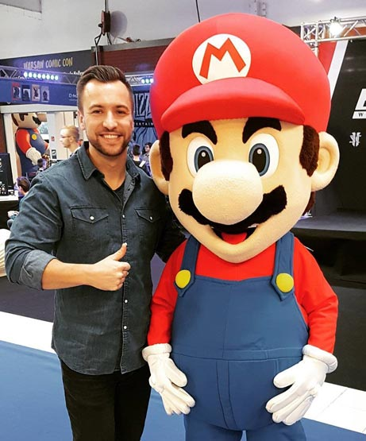

<section class="about-projects-dg" *ngIf="showContent">
  <button class="close-dialog-btn" (click)="closeDialogFn()"><mat-icon>close</mat-icon></button>
  <div class="about-projects-dg__content">
    <h1 class="content__title"><span class="content__icon-cont"><mat-icon>important_devices</mat-icon></span><span>My projects</span></h1>
<!--    -->
<!--    <p class="content__subtitle">Hello !</p>-->
<!--    <p class="content__text">My name is Przemysław Szczepański and I am a front-end developer.<br>-->
<!--      A graduate of the Kielce University of Technology. I've always wanted to do what I like, so I do everything to do it! <br>-->
<!--      In programming, I am most satisfied with the combination of clean code with an effective and eye-catching design.<br>-->
<!--      Currently, I am focusing on grinding and expanding knowledge in the Angular framework.-->
<!--      In my free time I relax while watching a comedy, for example with Jim Carrey or I care that my body will still look and fit my old clothes. In addition, a-->
<!--      great fan of Blizzard, in particular their classic titles. </p>-->
  </div>
</section>
